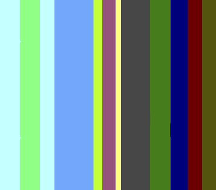
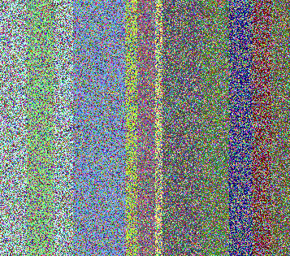
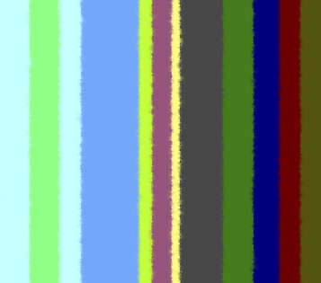
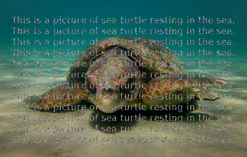
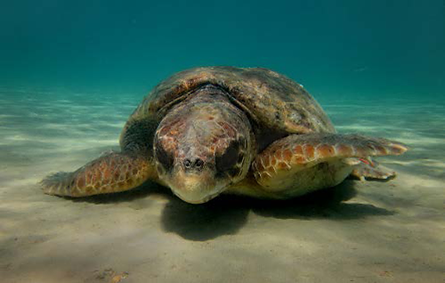
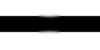
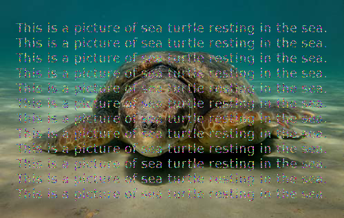

MATLAB Codes for the Image Inpainting Problem
All the scripts provided are used in Partial Differential Equation Methods for Image Inpainting (Carola-Bibiane Schoenlieb, Cambridge University Press, 2015).
Authors: Simone Parisotto (email: sp751 at cam dot ac dot uk) Carola-Bibiane Schoenlieb (email: cbs31 at cam dot ac dot uk)
Address: Cambridge Image Analysis Centre for Mathematical Sciences Wilberforce Road CB3 0WA, Cambridge, United Kingdom
Date: September, 2016
Last update: October, 2018
Licence: BSD-3-Clause (https://opensource.org/licenses/BSD-3-Clause)
Contents
How to cite this work
Please use the following entry to cite this code:
@Misc{MATLABinpainting2016,
author = {Parisotto, Simone and Sch\"{o}nlieb, Carola},
title = {MATLAB Codes for the {Image} {Inpainting} {Problem}},
howpublished = {GitHub repository, {MATLAB} Central File Exchange},
month = {September},
year = {2016}
}1) AMLE Inpainting (Absolute Minimizing Lipschitz Extension Inpainting)
Function used to reproduce Figure 4.10 in Partial Differential Equation Methods for Image Inpainting (Carola-Bibiane Schoenlieb, Cambridge University Press, 2015).
cleanfilename = 'amle_clean.png';
amle_clean.png :

maskfilename = 'amle_mask.png';
amle_mask.png :

[u,mask] = create_image_and_mask(cleanfilename,maskfilename);
imwrite(u,'./dataset/amle_input.png')
amle_input.png :

% parameters lambda = 10^2; tol = 1e-8; maxiter = 40000; dt = 0.01; % inpainting inpainting_amle(u,mask,lambda,tol,maxiter,dt);
Result image:

Tic/Toc time: Elapsed time is 34.93 seconds.
See the code inpainting_amle.m.
Bibliography
- Caselles, V., Morel, J. M., & Sbert, C. (1998). An axiomatic approach to image interpolation. Image Processing, IEEE Transactions on, 7(3), 376-386.
- Almansa, A. (2002). Echantillonnage, interpolation et detection: applications en imagerie satellitaire (Doctoral dissertation, Cachan, Ecole normale superieure).
2) Harmonic Inpainting
Function used to reproduce Figure 2.2 in Partial Differential Equation Methods for Image Inpainting (Carola-Bibiane Schoenlieb, Cambridge University Press, 2015).
cleanfilename = 'harmonic_clean.png';
harmonic_clean.png :

maskfilename = 'harmonic_mask.png';
harmonic_mask.png :

[u,mask] = create_image_and_mask(cleanfilename,maskfilename);
imwrite(u,'./dataset/harmonic_input.png')
harmonic_input.png :

% parameters lambda = 10; tol = 1e-5; maxiter = 500; dt = 0.1; % inpainting inpainting_harmonic(u,mask,lambda,tol,maxiter,dt);
Result image:

Tic/Toc time: Elapsed time is 2.14 seconds.
See the code inpainting_harmonic.m.
Bibliography
- Shen, J., & Chan, T. F. (2002). Mathematical models for local nontexture inpaintings. SIAM Journal on Applied Mathematics, 62(3), 1019-1043.
3) Mumford-Shah Inpainting
Function used to reproduce Figure 7.3 in Partial Differential Equation Methods for Image Inpainting (Carola-Bibiane Schoenlieb, Cambridge University Press, 2015).
cleanfilename = 'mumford_shah_clean.png';
mumford_shah_clean.png :

maskfilename = 'mumford_shah_mask.png';
mumford_shah_mask.png :

[u,mask] = create_image_and_mask(cleanfilename,maskfilename);
imwrite(u,'./dataset/mumford_shah_input.png')
mumford_shah_input.png :

% parameters maxiter = 20; tol = 1e-14; param.lambda = 10^9; % weight on data fidelity (should usually be large). param.alpha = 1; % regularisation parameters \alpha. param.gamma = 0.5; % regularisation parameters \gamma. param.epsilon = 0.05; % accuracy of Ambrosio-Tortorelli approximation of the edge set. % inpainting inpainting_mumford_shah(u,mask,maxiter,tol,param);
Result image:

Tic/Toc time: Elapsed time is 48.99 seconds.
See the code inpainting_mumford_shah.m.
Bibliography
- Esedoglu, S., & Shen, J. (2002). Digital inpainting based on the Mumford-Shah-Euler image model. European Journal of Applied Mathematics, 13(04), 353-370.
4) Cahn-Hilliard Inpainting
Function used to reproduce Figure 5.9 in Partial Differential Equation Methods for Image Inpainting (Carola-Bibiane Schoenlieb, Cambridge University Press, 2015).
cleanfilename = 'cahn_hilliard_clean.png';
cahn_hilliard_clean.png :

maskfilename = 'cahn_hilliard_mask.png';
cahn_hilliard_mask.png :

[u,mask] = create_image_and_mask(cleanfilename,maskfilename);
imwrite(u,'./dataset/cahn_hilliard_input.png')
cahn_hilliard_input.png :
% parameters maxiter = 4000; param.epsilon = [100 1]; param.lambda = 10; param.dt = 1; % inpainting inpainting_cahn_hilliard(u,mask,maxiter,param);
Result image:

Tic/Toc time: Elapsed time is 8.35 seconds.
See the code inpainting_cahn_hilliard.m.
Bibliography
- Bertozzi, A., Esedoglu, S. & Gillette, A. (2007). Inpainting of binary images using the Cahn-Hilliard equation, IEEE Transactions on image processing 16.1 pp. 285-291 (2007).
- Schoenlieb, C.-B. & Bertozzi, A. (2011). Unconditionally stable schemes for higher order inpainting, Communications in Mathematical Sciences, Volume 9, Issue 2, pp. 413-457 (2011).
5) Transport Inpainting
Function used to reproduce Figure 6.1 in Partial Differential Equation Methods for Image Inpainting (Carola-Bibiane Schoenlieb, Cambridge University Press, 2015).
cleanfilename = 'transport_clean.png';
transport_clean.png :

maskfilename = 'transport_mask.png';
transport_mask.png :

[u,mask] = create_image_and_mask(cleanfilename,maskfilename);
imwrite(u,'./dataset/transport_input.png')
transport_input.png :

% parameters tol = 1e-5; maxiter = 50; dt = 0.1; param.M = 40; % number of steps of the inpainting procedure; param.N = 2; % number of steps of the anisotropic diffusion; param.eps = 1e-10; % inpainting inpainting_transport(u,mask,maxiter,tol,dt,param);
Results image:
Tic/Toc time: Elapsed time is 151.69 seconds.
See the code inpainting_transport.m.
Bibliography
- Bertalmio, M. (2001). Processing of flat and non-flat image information on arbitrary manifolds using partial differential equations.PhD Thesis, 2001.